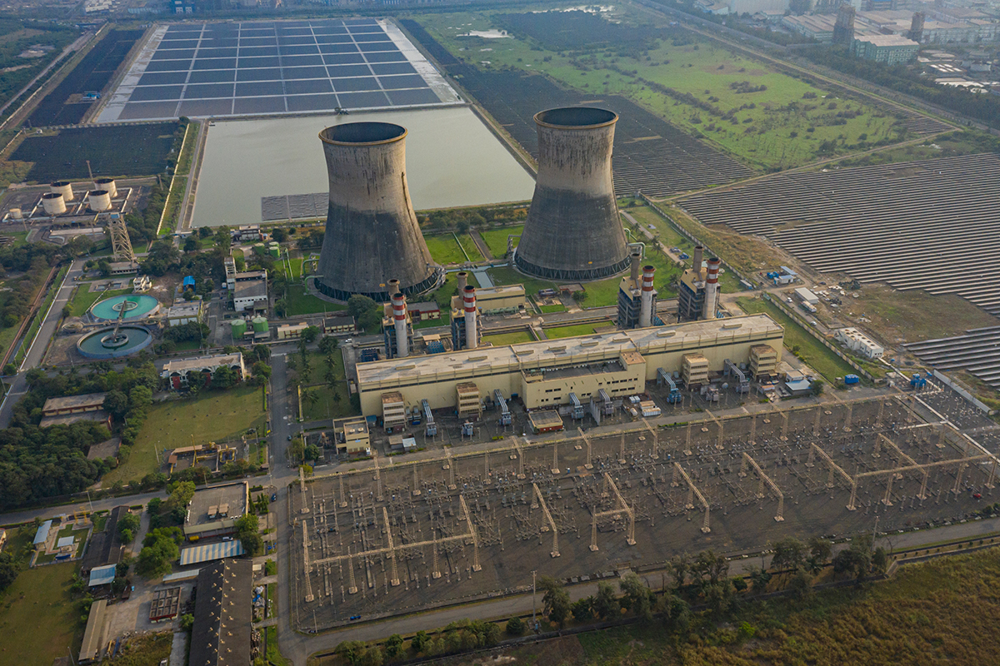

Report. Track. Resolve.
Empowering NTPC employees and administrators with a modern, transparent, and efficient way to manage complaints. Log issues, attach photos, and track progress in real time — ensuring faster resolution and accountability.
